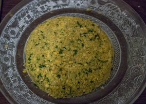
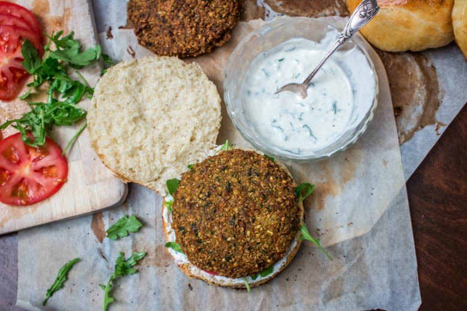
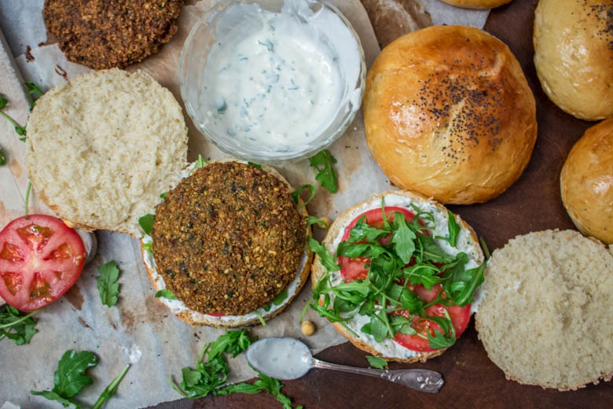
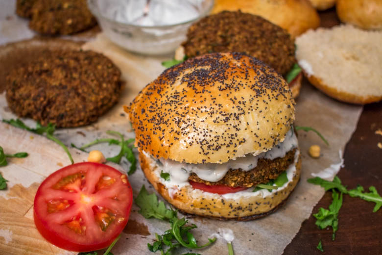
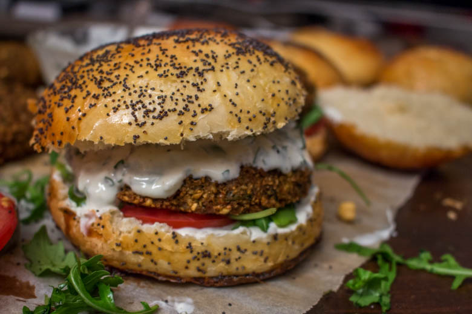

Falafel burger ou burger végétarien qui fait du bien

Et si on se préparait un burger un peu plus « sain » que d’habitude?
Depuis quelques temps déjà j’entends parler de burgers végétariens mais je n’avais pas encore franchi le cap! En tant que bonne fan de burgers qui se respecte il a bien fallu que je m’y mette 🙂
Le choix du « steak » n’a pas était très dur en effet un steak aux pois chiche façon falafels était une évidence pour moi et surtout pour nous! Je me voyais mal pour mon premier burger végétarien proposer un steak de Tofu à mon chéri^^ (même si ça doit sans doute valoir le coup!) Pour ceux que cela intéresse vous trouverez ma recette de falafels (ici).
C’est ça que j’aime dans la cuisine, c’est partir d’une idée puis laisser la recette prendre forme dans ma tête (sans trop savoir comment). Je ne sais jamais ce que le résultat va bien pouvoir donner, c’est une surprise à chaque fois et quand c’est réussi j’en suis ravie 🙂 Ça me rappelle l’histoire de mon hamburger à la raclette (ici) que j’avais totalement inventer en l’espace d’une douche et depuis c’est devenu l’un de mes burgers préférés!
Ici, j’ai donc décidé de faire quelque chose d’un peu plus « sain » avec des saveurs que nous aimons et de caser tout ça dans un bon gros hamburger. Comme à chaque fois (enfin presque à chaque fois) j’ai fais mon pain moi même, toujours avec la même recette que vous trouverez ici (et qui fonctionne à chaque fois!)
Mon falafel burger n’est pas très très compliqué! Une couche de sauce au yaourt, des tomates, de la roquette, un steak de pois chiche encore de la sauce (on peut se le permettre elle n’est pas grasse du tout du tout 😀 ) et le tour est joué!!
Je m’excuse pour la qualité des photos qui manquent un peu de lumière mais promis c’est la dernière fois!!
Ingrédients
- Pois chiche secs - 500g
- Ail - 3 gousses
- Persil frais - 1/2 bouquet
- Coriandre fraîche - 1/2 bouquet
- Oignon - 1
- Coriandre en poudre - 2 càc
- Cumin en poudre - 3 càc
- Bicarbonate de sodium - 1 càc
- Huile de friture
- Tomate - 3
- Roquette
- Yaourt grec - 3
- Jus de citron - 3 càs
- Persil frais
- Poivre blanc - 2 càc
- Ail - 1 à 2 gousses
- Cumin - 1 càc
Instructions
- Laisser tremper les pois chiche au moins toute une nuit dans deux fois leur volume en eau froide
- Égoutter les pois chiche et les laisser sécher (au moins deux heures) entre deux feuilles de papier absorbant (c'est très très important qu'ils soient bien secs!!)
- Mettre les pois chiche secs dans un robot ménager et donner de légères impulsions car le but n'est pas d'obtenir une purée ou une pâte de pois chiche. Répéter l’opération plusieurs fois. Il faut obtenir des pois chiche finement hachés et qui s’agglomèrent entre eux
- Ajouter les épices aux pois chiche hachés, le bicarbonate de sodium et une pincée de sel
- Hacher très finement l'oignon, l'ail, le persil et la coriandre fraîche /! si vous nettoyez les herbes fraîches, faites les correctement sécher /!
- Incorporer les herbes hachées aux pois chiche
- Mélanger. Normalement vous devez constater que votre préparation s’agglomère facilement
- Former des steaks (environ de 180g-200g pour moi)
- Personnellement je façonne mes steaks en formant une boule dans mes mains Je l'aplatis ensuite légèrement entre les paumes de mes mains Puis je le tasse et lui donne sa forme sur une assiette plate afin que la préparation à falafels soit bien "compacte" et que le steak ne se délite pas à la cuisson
- Dans une casserole, faire chauffer de l'huile
- Une fois que l'huile est bien chaude, faire frire le steak /! Prendre une spatule fine et large pour ne pas casser le steak de falafel au moment de le plonger dans l'huile /!
- Laisser cuire environ environ 4 minutes (surveillez régulièrement la couleur du steak de falafel; il ne doit être ni trop clair ni trop foncé )
- Une fois cuit, le déposer sur du papier absorbant et commencer le montage des hamburgers
- Dans un bol verser les yaourts
- Ajouter le jus d'un demi citron
- Ciseler le persil et écraser la gousse d'ail puis les ajouter à la sauce
- Incorporer les épices
- Bien mélanger
- Réserver au frais
- Couper les pains en deux
- Verser de la sauce sur la base du pain
- Déposer quelques feuilles de roquettes
- Poser des rondelles de tomates (pour mes gros burgers à moi j'en ai mis deux)
- Mettre le steak par dessus
- Recouvrir généreusement de sauce
- Fermer avec le chapeau





Les tips de la communauté
Le Falafel Burger végétarien reçoit des commentaires appréciatifs pour son concept original et sa capacité à satisfaire même les non-végétariens.
Astuces
- Bien assaisonner les falafels pour un goût prononcé
Variantes suggérées
- Ajouter différentes sauces selon les préférences
- Inclure des légumes frais variés dans le burger
Ajustements signalés
- les laisser toute une nuit dans de l’eau et les sécher le lendemain.